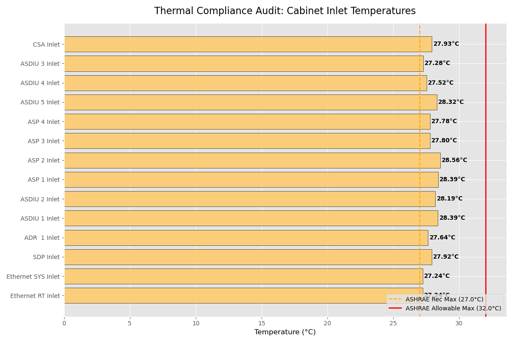
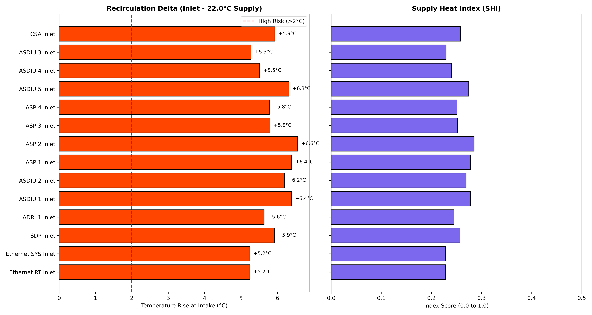
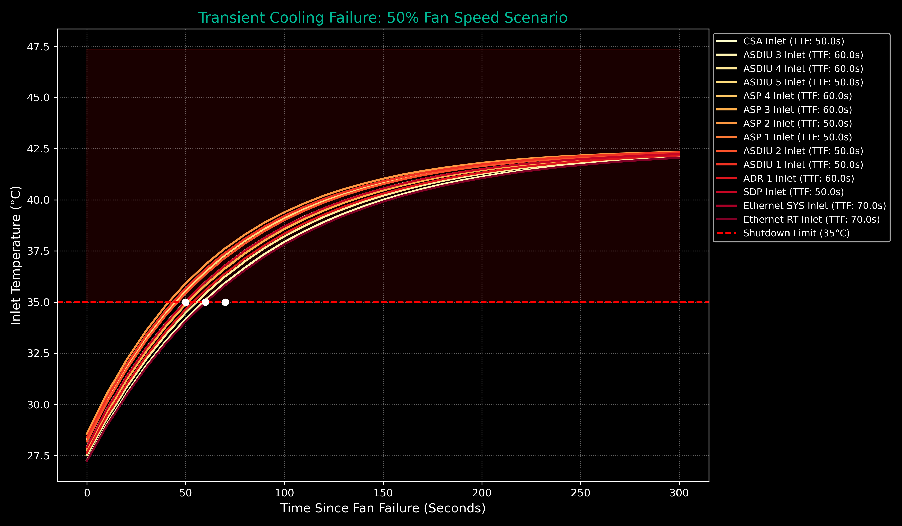

Root Cause Analysis
Steady-state analysis at 100% fan capacity reveals that 100% of inlets operate within the Marginal Zone (Above 27°C Recommended, Below 32°C Allowable). This is driven by recirculation (ΔT 5-6°C), leaving the infrastructure with zero thermal buffer during transient cooling degradation events.
Configuration & Methodology
- Hardware: 42U Vertical Rack Chassis
- Power Density: 12,758.6 W (High-Density Load)
- Steady-State Baseline: 100% Fan Capacity
- Transient Audit State: 50% Fan Capacity (Failure Modeling)
- Compliance Standard: ASHRAE TC 9.9 Class A1
ASHRAE Compliance Audit
Steady-State (100% Fans) vs. ASHRAE Envelopes.

Audit Finding: Inlets sit ~1.6°C above Recommended limits. While below the absolute Max (Allowable), this indicates a lack of cooling redundancy for the current power density.
Airflow Recirculation Analysis
Evaluating Supply Heat Index (SHI) at steady-state.

Analysis Insight: High recirculation confirms that exhaust heat is bypassing secondary containment, directly impacting the inlet thermal margin.
Transient Ride-Through (TTF)
Predicting Time-to-Failure (TTF) from 100% to 50% fan capacity.

Simulation Note: Due to the marginal steady-state baseline, the "Time-to-Failure" for exceeding Allowable limits is significantly compressed.